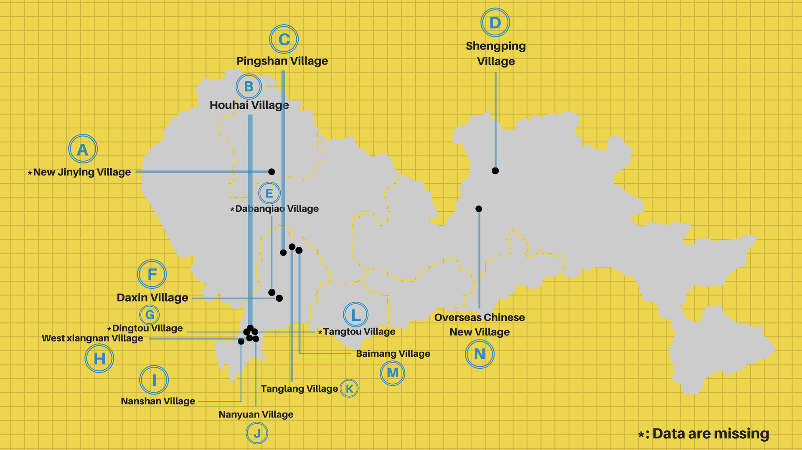

Investigative Project
LI Yujie
LIU Huiyan
GAO Yue
LI Yuquan
LIN Sihan
XU Mingyan
oing through the entry port in Luo Hu, passing the huge modern Luo Hu Square, acrossing the grand city hall, procuratorate office and skyscraping buildings, and slipping into an off-street corner, you will see a shabby and crowded complex: Luo Hu Cun, an urban village in Shenzhen. Liu lived there.
Meet the “Black” Broadband
ccording to Shenzhen Official renting guidebook in 2017, its renting fee is nearly three times lower than the average. Other daily necessities are also cheaper: five yuan per kg for grape; ten yuan for a nice breakfast and 80 yuan per month for a broadband service, all of which is nearly half the normal price in Shenzhen, one of the most expensive cities in mainland China.
Liu bought one 50 yuan per month broadband service --- cheapest among all---in the first day of his arrival. The broadband adlet blots the corridor of the buildings he lived, writing “Hurry up to have our service, fast and cheap” and “Scan this QR code right now”. With the logo of mainland giant broadband company, China Mobile, on, he scanned the QR code, added a personal account as friend in Wechat, a Chinese messaging app, and the internet service was settled in two days.
“It’s… just too fast. We set a time and when they came, they didn’t wear the working suit and finished the whole process by just inserting a telephone wire, a telephone wire! No contract and No receipts,” Liu said. Several days later, he found the internet speed was just 10M per seconds which is ten times slower than what it should be. Another several days later, he asked the the telecommunication company staff to repair and they told him the whole residents in this building are using one account, one IP address.
That’s an illegal broadband, a common problem for all the urban villages. By the end of 2017, in Shenzhen, the number of its users has exceeds 10 million which accounts for one fifth of the whole, according to the official documents from The Communication Bureau of Shenzhen.

“Legal” providers
Who used to be illegal
fter the Department of Communication Management conducted several actions clearing the illegal broadband, it appears that the number of unregistered broadband in urban villages has decreased a lot, but the real situation doesn’t change much.
Ms. Kong, 24-year-old living in Dabu Village in southeast Shenzhen, has been suffering from the broadband service for several months.
The broadband line in Kong’s flat was repeatedly connected by companies and cut by the landlord. After one month without broadband service, lines from China Telecom was finally installed. When Kong went to the business hall of the company to register for her lines, the staff said they even didn’t know the lines was laid in her building.
Phoning the number given by the landlord, Kong found the person was a real staff of China Telecom, but the broadband service he sells, bundled with a phone card, was 50 yuan more expensive than the business hall.
“This is definitely unfair bundling sales,” said Kong.
Du Xiang, from the Department of Communication Management, explained that some broadband providers used to be illegal has signed corresponding contract with legal companies to transfer them out of the hit list, but they secretly kept some users in their own hands, selling a higher price to them.
In the plan to remove illegal broadband, the department allocated different “responsible areas” to four Telecommunication giants and ordered these companies to send their own staff, not the correspondents, to deal service with residents in the pilot area.
However, whether these responsible companies could lay their lines successfully in their “responsible area” and what if they are the only company in that area, remains problematic.
Malign competition
Potential monopoly
ong’s village was covered by China Telecom. Just days after she acquired service from the company when the new year began, the lines was cut by the landlord. Even after the police came, the result was returning the money—no internet service available for a whole month.
Kong said several operators fight for contracting rights in different areas, and the service provider in the same area could change frequently. Last year, the broadband laying project that she just signed contract with, was destroyed by another company, which newly got the right to run service in her building.
“Such thing is not rare at all. It’s not my choice to use which company’s service. Even within the same company, different correspondents also have conflicts with each other,” said Kong.
Du Xiang, the officer of Communication Management Department, admitted that most of the time the decision was not made by residents, but the property management office.
The office could cooperate with one of the companies, rejecting all other operators to come in, or they could lay the lines by their own charging the broadband companies high entrance and management fee, Du said.
“If the monopoly happened because of the property management office, our department can’t handle it,” said Du.
To eliminate them is difficult
hu, 34, a migrant worker, lived in the Tang Lang Village located in the southwest of Shenzhen. He was forced by his landlord to choose the illegal broadband service. Even if he asked the telecommunication staff for help to reinstall a legal one, two or three months later, its lines would be cut off.
His landlord said to Zhu: “Without his permission, what the staff installed is the illegal broadband. Stay here, use my broadband. If not, move out.”
Many landlords in the urban villages cooperate with the illegal broadband service providers for profits. Zhu has tried to call the police and negotiate with the landlord but it didn’t work at all. “Even the telecommunication company has given up our area,” he said.
The landlord owns the whole building. To let the whole residents share one broadband can’t be judged clearly whether it’s legal or not. So the policeman and telecommunication company don’t have any authority on it.
This problem is rooted in China’s dual tenure policy which differentiate the rural and the urban. Zhang Jigang, an associate professor of Urban Planning in Sichuan University said government can directly supervise the urban while the village committee is the de facto controller of the rural, which requires a complicated process for the local government to intervene.
Soon after, Zhu moved out. “We are homeless people there. I left and there will be another migrant like me to rent this house. The problem will still be left unresolved.”
Most of the residents in urban village are floating population which accounted for over 62% of the whole population, according to the official document from Shenzhen Urban Planning Academy.
Zhang, the professor, said:“The urban village is the rural land but it’s located in the city and hard to manage, so it will be in a huge mess. Counterfeits, frauds and drugs, many things are happening, especially in the border city like Shenzhen.”